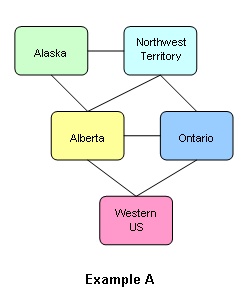
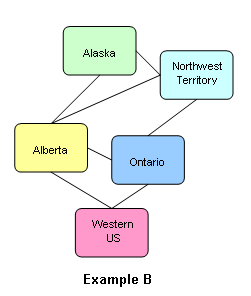
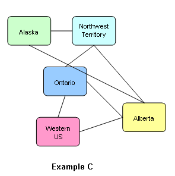

For example, in TurboRisk Alberta borders with Alaska, Northwest Territory, Ontario and Western US; in any map you draw, these links will remain the same. Actually there's nothing that prevents you from drawing your Alberta in the middle of Africa, but it will continue to belong to North America and will continue to border with the above mentioned territories, so what you'll get is a map that will very likely create confusion in its users.
To visualize this concept, you can imagine the territories linked to their bordering territories with rubber bands. You can move them and strecht the bands, but if you make the bands cross or overlap you get an inconsistent map.
Look at the following example:

Example A represents a portion of a map where the position of the territories are very close to their actual positions in the TurboRisk standard map.

In Example B the territories occupy new positions. However, their relations are very clear, because every territory is next to its the bordering territories. This is a "well-formed" variation of Example A.

On the contrary, Example C is a "bad map". From the position of the territories, the user will deduce that he can move his armies from Alaska to Ontario, which is not possible, and he will be surprised to see that armies can go from Alaska to Alberta, which is not adjacent to it.Thus, in making new maps, you're suggested to make them easy to understand. In other words, place bordering territories one next to the other, like if the armies could actually move on the ground (or sea) to go from one to the other.